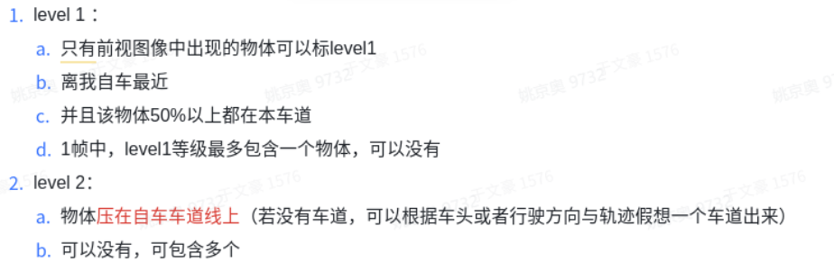

1.2 评测逻辑
说明：只评测cipo中level1和level2目标，CIPO（closest in path of obstacles），包含四个level得目标
误差统计项计算流程： a. 时间戳匹配 摄像头传感器时间戳与gt时间戳（激光时间戳）进行最近邻匹配。 b. Track匹配
计算CIPO所在的gt的track
计算dt所在track与gt所在track的IoU累积和
取最大IoU累积和所在的dt track作为匹配结果，如果rank 1的IoU累积和小于0.2，则认为无匹配结果
- Track去噪
在track匹配对中，去掉有dt无gt和有gt无dt得数据
- 指标计算
在track匹配对中，某一个时间戳，如果gt和dt的IoU > 0.1，则TP+1
如果TP+1，则这一组数据用于计算距离、速度和yaw误差。
准召和num项计算流程： 准确率（precision）计算：在上述误差统计项计算流程中得到TP后，TP除以匹配上的检测track中有效时间戳的个数。 召回率（recall）计算：在上述误差统计项计算流程中得到TP后，TP除以匹配上真值track中有效时间戳的个数。 num计算：在track匹配上后，num为track匹配对中既有检测结果又有真值结果，且dt与gt的iou>0.1的时间戳总个数（与计算yaw角等误差的目标总个数保持一致）。